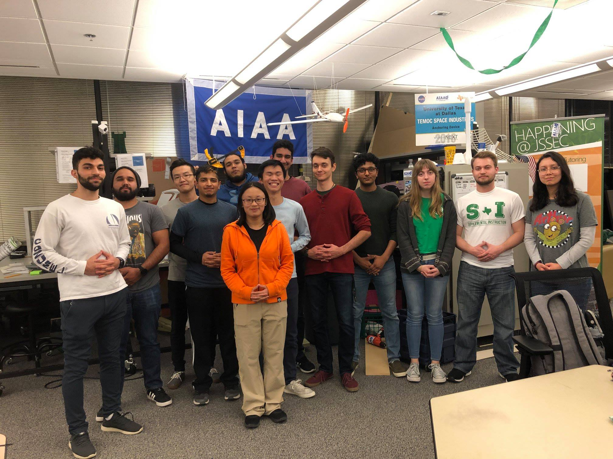

AIAA UT Dallas was founded in 2015 by Tarang Brahme and a group of Masters/PhD students.The organization focused on creating a constitution and developing a relationship with AIAA North Texas. In 2016, Craig Hartnell was chosen as the new president, and the focus shifted towards growing an aerospace foundation. This involved inspiring engineering students to pursue opportunities by hosting professional development events and going to aerospace related conferences. During his tenure, our first competition team for the CANSAT competition finished its first 118-page proposal, and started to build prototypes for future competitions. In 2018, after the election of Rohit Gattamaraju as our new president, the focus changed to rapidly expand the amount of hands-on knowledge of members, to grow the influence of this organization on campus, and to restructure officer and member roles so that tasks can be completed more efficiently. After a summer of planning, within the month of September, AIAA UTD grew from 13 to 65 members, raised $2100, and has filled design teams for the Design Build Fly Competition and the CANSAT Competition. AIAA UT Dallas also started Research Aerospace Design (RAD), a weekly workshop accessible to members which focuses on providing students a platform to experience the practical aspects of aerospace design. Our mission has always been to inspire the next generation of aerospace engineers, and through the programs that we have created this semester, we are on the pathway to secure a lasting aerospace foundation at The University of Texas at Dallas.
